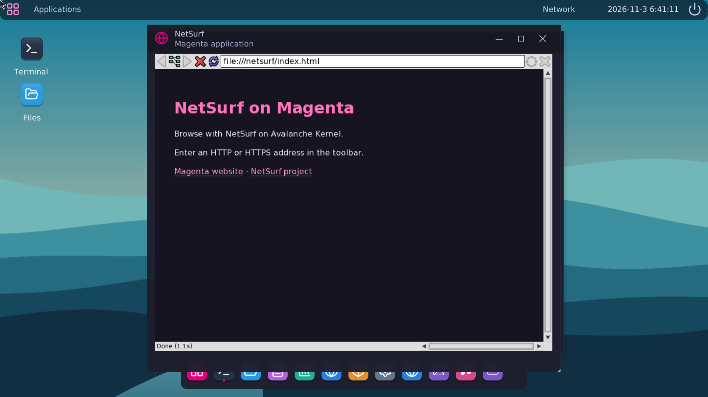

BROWSING
NetSurf.
At home in Magenta.
NetSurf runs in its own userspace process, with HTML, CSS, JavaScript, antialiased TrueType text and HTTPS certificate validation. Its window uses Magenta's desktop controls.

Get the browser disk
Download the Magenta ISO and NetSurf app disk. Extract the compressed disk and attach it as the virtual machine's writable IDE disk.
gzip -dk netsurf-data.img.gz
qemu-system-x86_64 -m 512 -boot d -cdrom magenta.iso \
-drive file=netsurf-data.img,format=raw,if=ide \
-nic user,model=e1000 -device virtio-rng-pci,disable-modern=onOpen NetSurf
Open netsurf.mgnta in Files, or type its name in Terminal. The welcome page opens from disk. Enter a web address in the toolbar and press Enter. Back, forward, reload and stop are beside the address bar.
netsurf.mgnta
netsurf.mgnta https://www.netsurf-browser.org/Drag the header to move the window. Its controls minimize, maximize and close it. System Monitor lists NetSurf in Applications and shows its process and memory in Processes.
Certificates are checked against the bundled Mozilla CA certificates. An invalid certificate opens NetSurf's privacy error page.
Build from source
make package
make netsurf
make test-netsurfThe port source contains the native surface, resolver, build recipe and integration checks. Learn more about the upstream browser at netsurf-browser.org.